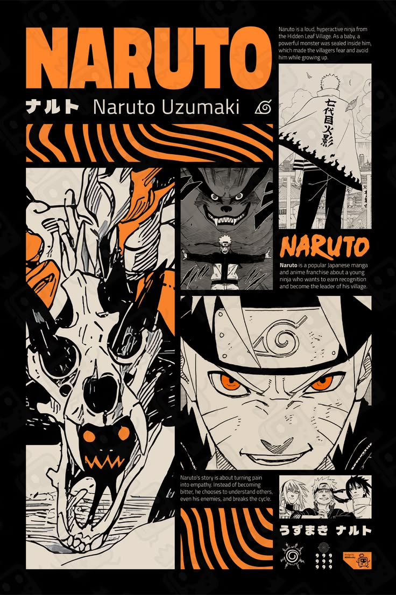
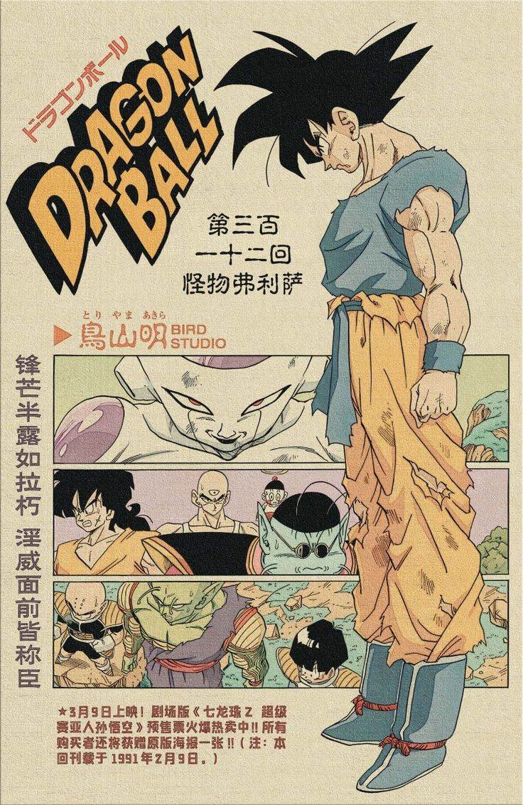
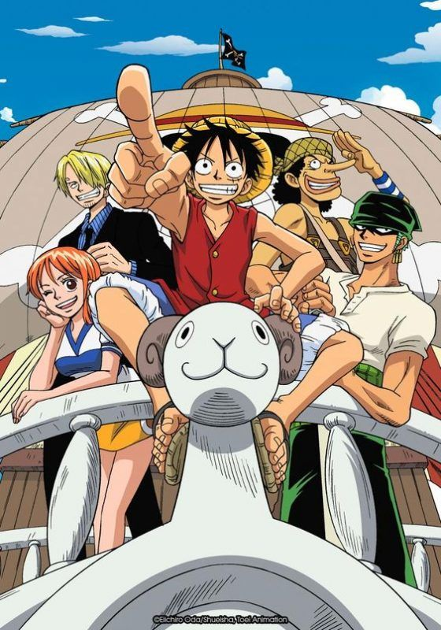

Naruto
Naruto cuenta la historia de un joven ninja que sueña con convertirse en Hokage, el líder de su aldea.
Es uno de los animes más importantes de la historia y ayudó a popularizar el anime en todo el mundo.

Dragon Ball
Dragon Ball revolucionó los animes de acción y peleas.
Goku se convirtió en uno de los personajes más famosos y queridos de toda la cultura pop.

One Piece
One Piece sigue las aventuras de Monkey D. Luffy y su tripulación pirata.
Es uno de los mangas más vendidos de todos los tiempos.

Demon Slayer
Demon Slayer se volvió mundialmente famoso gracias a su increíble animación y sus escenas de combate.
CURIOSIDADES
🎌 Japón
Japón produce cientos de animes cada año.
📚 Manga
Algunos mangas venden millones de copias.
🎮 Cultura Pop
El anime influye en videojuegos, cine y música.
🌎 Mundial
Existen fans del anime en prácticamente todo el mundo.